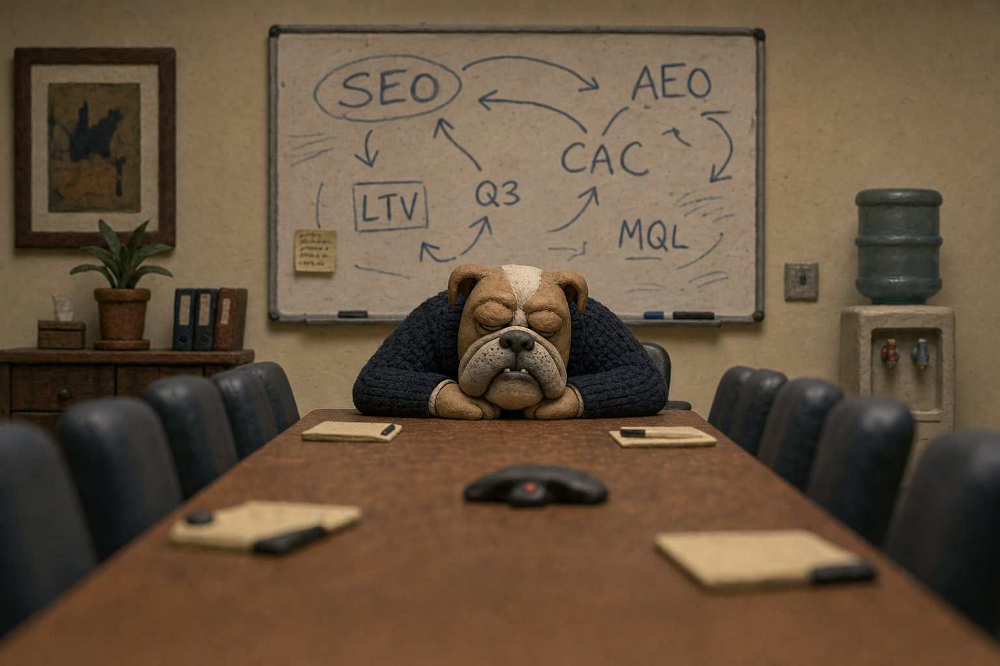
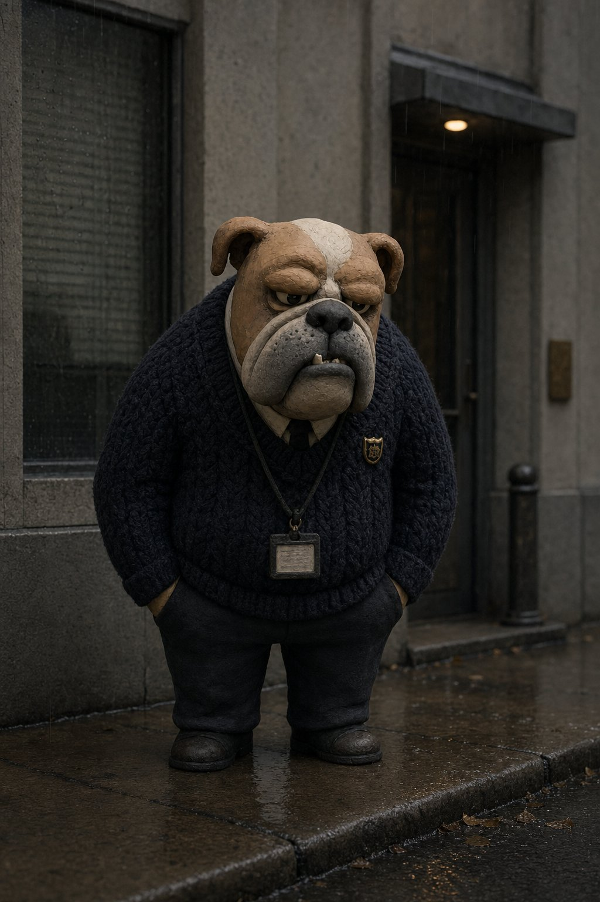
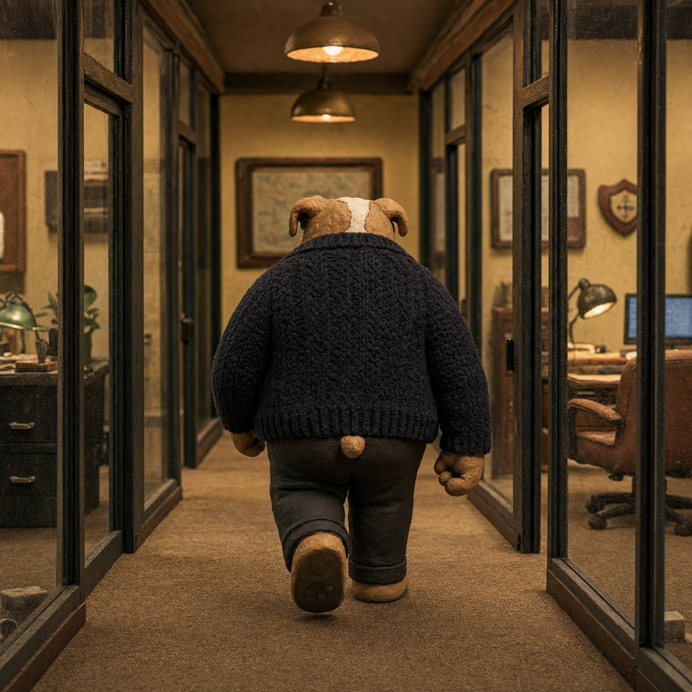
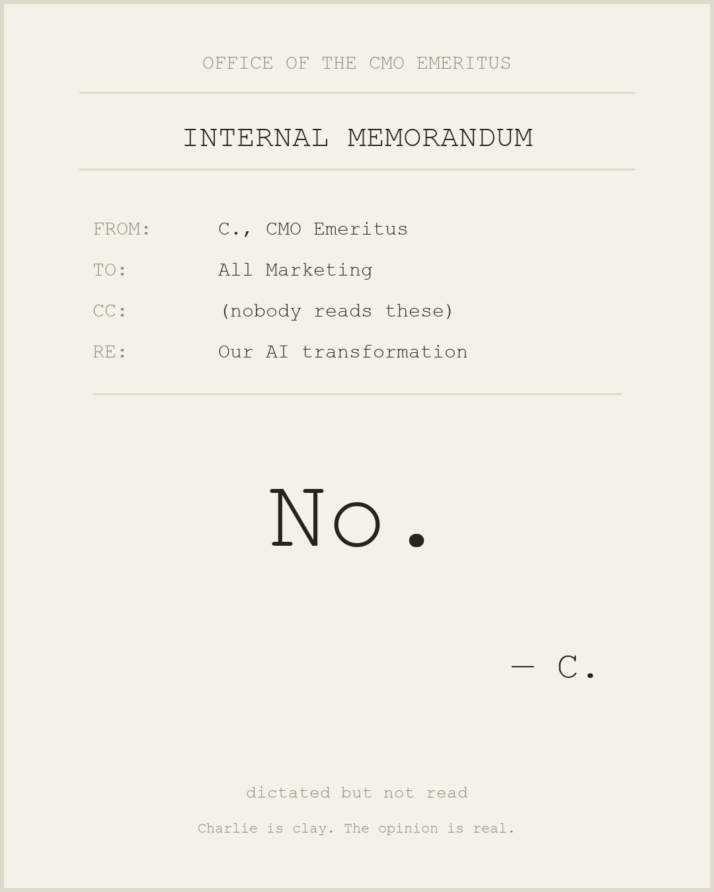
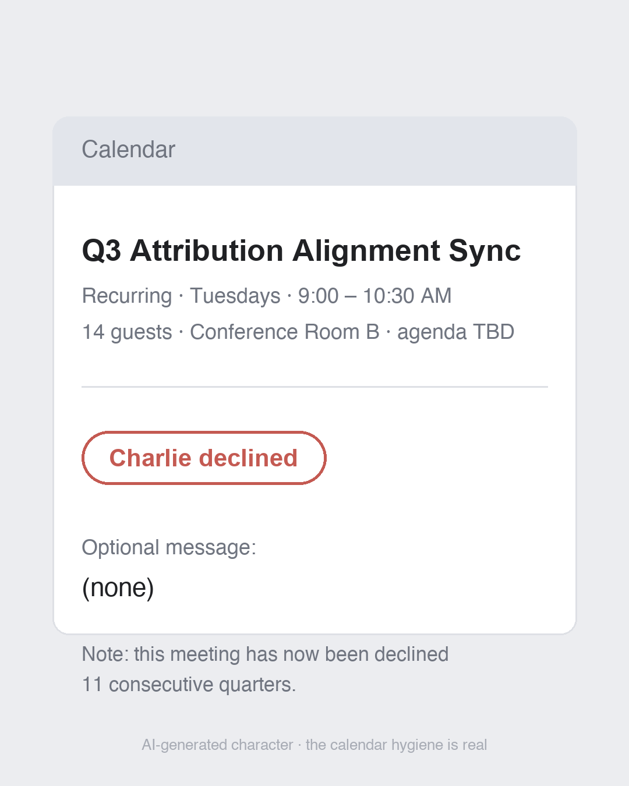
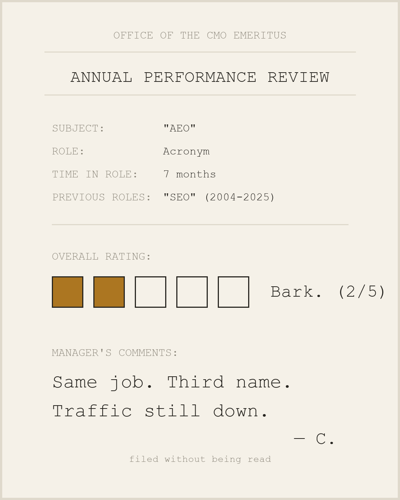
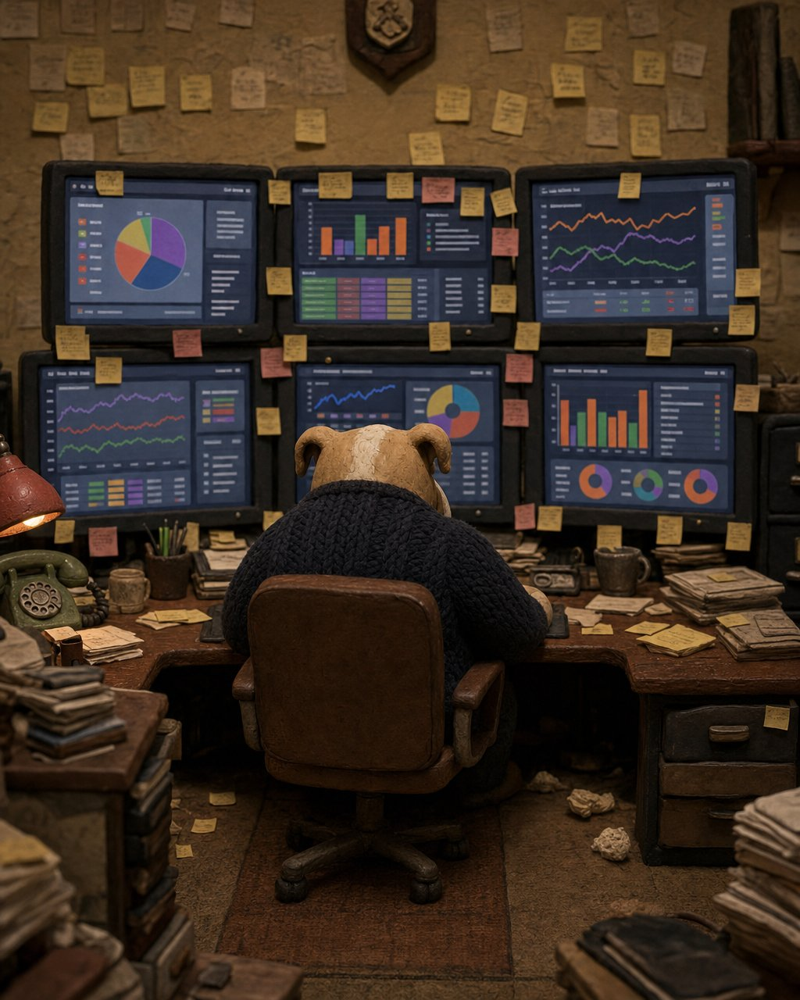
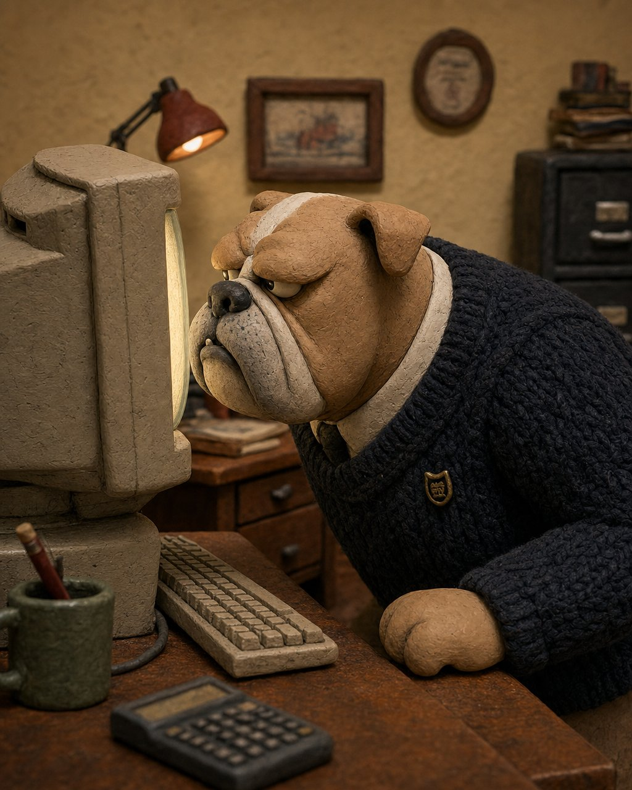
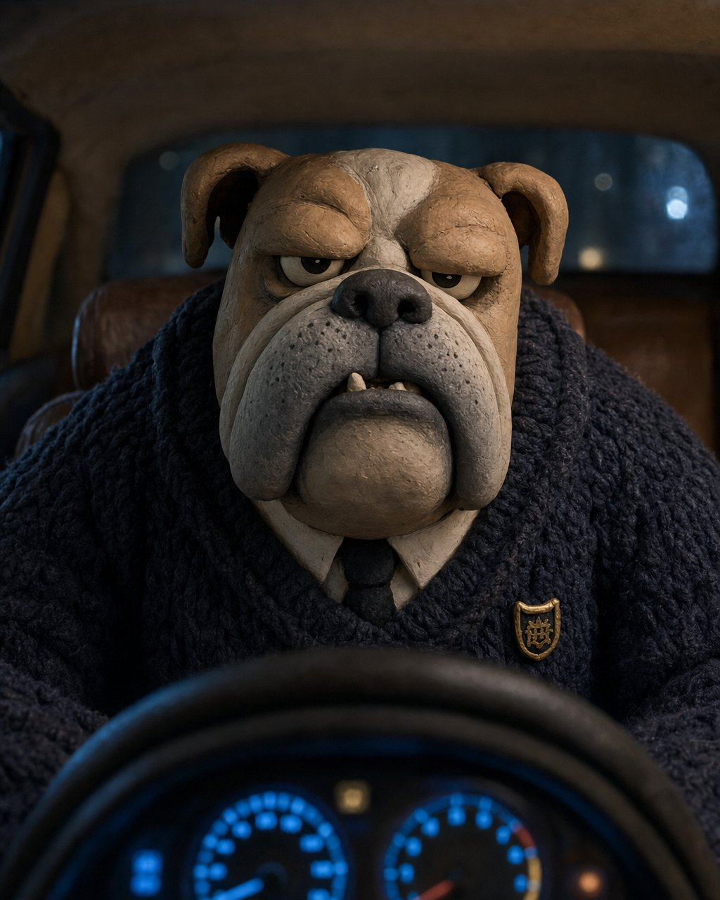
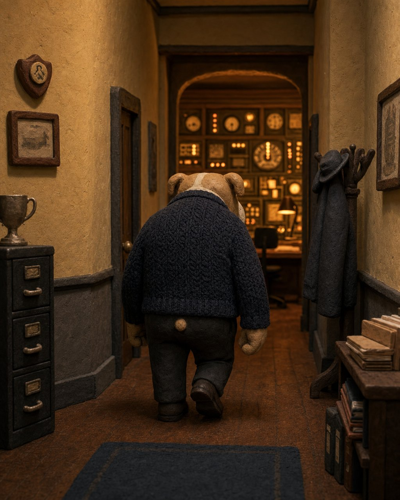

Reference set — the four missing scenes, rendered
The one-pager's reference set had two of six scenes rendered. The remaining four are now done in the locked clay canon, completing the visual canon every future clip cites.


The canonical reaction pack
Eight stills built for the reply game on X and comment cameos on LinkedIn — the account's real growth engine for the first six weeks. Month-one move: pin them as a clean, unwatermarked "reaction pack" thread so marketers steal them. Reuse by others is the win condition.




LinkedIn asset drop — built for the formats that win there
Per the platform research: pages are throttled and page video is declining, while multi-image sequences, documents (PDF), and fake-serious corporate artifacts outperform. Everything below ships from the Charlie page and gets carried by employee reshares. Full captions in POST-COPY.md.
Fake-serious corporate artifacts (programmatic — crisp text, zero genAI)



Comic strip 1 — "The stack audit" (clay · multi-image post)




Comic strip 2 — "Quarterly planning" (claymation · multi-image post)
Document post — the PDF carousel
Charlie's Mid-Year Marketing Review — H1 2026 (7 pages: cover, five verified-stat observations with reaction stills, "H2 outlook: Bark."). Documents are LinkedIn's top-performing organic format; page PNGs also exported to carousel-pages/ for reuse as a multi-image variant or X image-tweet.
Eight storyboards, i2v-ready
All eight boards run in the locked clay lane (per the style decision): four Lane-C launch-adjacent evergreens and four discourse-beat reactive evergreens. Every frame is a 9:16 keyframe for image-to-video generation — full shot specs, audio, captions and kill-conditions in each board's storyboard.md. Master spec: STORYBOARDS.md. Durations run 8–15s (revised from 15–30s — native model limits; stitching causes drift).
SB-01 · Charlie tries to learn Zapier
He attempts workflow automation. He does not. End card: "You don't have to become an engineer."
SB-02 · Charlie's MarTech stack
A floor of toys. He picks the one bone. Caption arc: "the stack" → "the strategy."
SB-03 · Charlie reads ChatGPT for his daily walks
Even the dog gets his answers from chat now. The AEO joke for the in-the-know.
SB-04 · Charlie meets a marketing engineer
The whiteboard has forty boxes. It needed one. Overlay on the resolve: "fixed it."
SB-05 · The zero-click stare
The dashboard flatlines; someone off-screen says "share of model." He turns. Signature evergreen, refreshed on every traffic study.
SB-06 · The nameplate
SEO → AEO → GEO. Locked-off identical framing is the joke — and the exploitable-template candidate. Extended by one plate per new acronym, forever.
SB-07 · Inbox purgatory
47 AI SDR emails. One paw. Zero reads. Never names a vendor — the genre is the target.

SB-08 · CMO extinction watch
Another F500 deletes the CMO title; he dusts the nameplate. The character-defining series. Hard rule: never within two weeks of real layoffs at the company in the news.
Production notes
Charlie is now a fully fictional bulldog in a locked clay canon (see the style decision) — the real-dog reference shoot is no longer a blocker. All stills are anchored to the clay style reference with the locked character codes baked into every prompt. Remaining gate before public shipping: the 10-clip i2v consistency pilot. Retired photoreal originals are archived at assets/prepro/_retired-photoreal/.
- Format selection is research-driven: LinkedIn assets are multi-image strips, a PDF document, and fake-serious artifacts — the three formats currently outperforming page video there. X assets are 1:1 reaction stills + 9:16 video boards.
- Text never goes through genAI. Memos, end cards and carousel pages are PIL-composed (
static_charlie_artifacts.py) — crisp type, zero artifact risk, instantly re-editable. - Pipelines are re-runnable:
preproduce_charlie.py(51-image catalog, batched, skip-if-exists) andstatic_charlie_artifacts.py(memos / endcard / carousel). Both read the key from.env. - Disclosure is baked into the copy pack — AI note in the first two sentences on LinkedIn, "Made with AI" toggle on X, and the standing line: "Charlie is clay. The opinions are real."
- Nameplate frames double as the template drop — the blank-plate still is engineered for community captioning (the exploitable format play).
What's next
- Character bible v1 sign-off — the visual codes are locked (Charlie codes); voice, ban-list, and crisis protocol still need writing + a second trained writer.
- Review this pack: approve/kill each reaction still and storyboard; flag any frame for re-roll (composition notes in each
storyboard.md). - i2v pilot: run SB-05 (cheapest: 4 static-camera shots) through Veo 3.1 Fast off these keyframes as the 10-clip consistency pilot.
- Account plumbing before post #1: X Premium Business + affiliate badge, HDYHAU form field, GSC branded-query baseline (per the measurement contract).